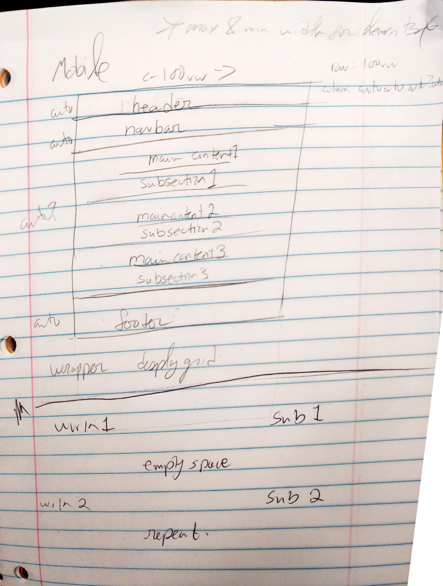
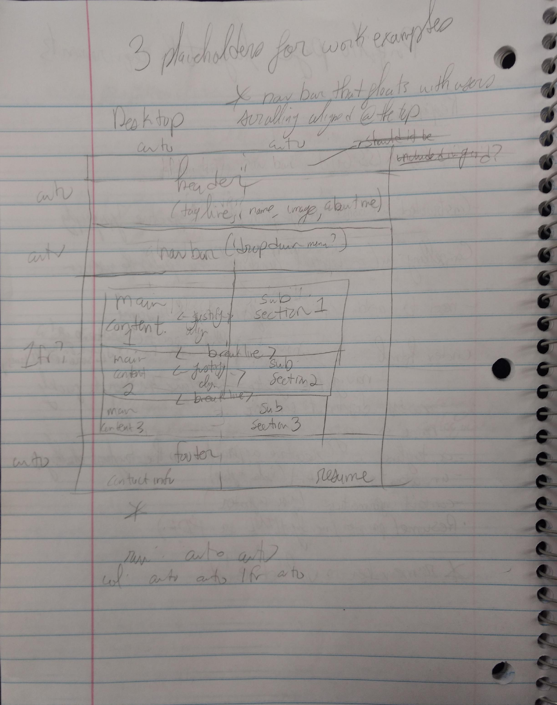

The goal of my portfolio is simply to inform those interested of what I have done, both now and in the future. It will serve as a website for an audience of potential employers mainly, and a secondary audience would be anyone curious about my works. Organization of content as of now will be chronological from top to bottom of what I have done, meaning my earliest works will be first in the content section, and my most recent works will be near the bottom. Below are the mobile and desktop design sketches (Sized larger to aid in viewing the drawings).
 The dimensions of the images will need to be at least 516 x 516 so they can be scaled appropriately on the webpage. As of right now the only resources that are on the website that are not of my ownership are the placeholder images, which are linked to their rightful owners website, or alternatively you can click here and you'll be taken to their website.
The final design of the website will be stylistically similar to the visions declared in the rough draft and in the images above, which were adhered to unless changes were made to better display the content (for example the navbar's position).
Upon submitting the document the changes have been made since the rough draft:
- Added margin and padding to main section
- Fixed alignment issues across the website
- Repositioned the navbar, also made it remain on the top of the page
- Adjusted the minimum size of the header image to prevent it becoming too small
- Added styles to the documentation that match the portfolio page
- Performed validation to both css and html of portfolio page
- On smaller screens the image placeholder now has a border which also functions as a link to the image owners website